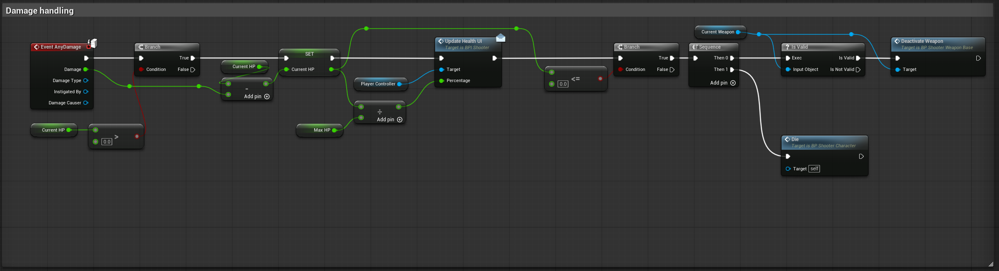
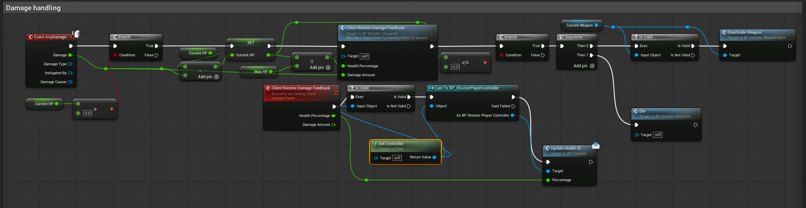
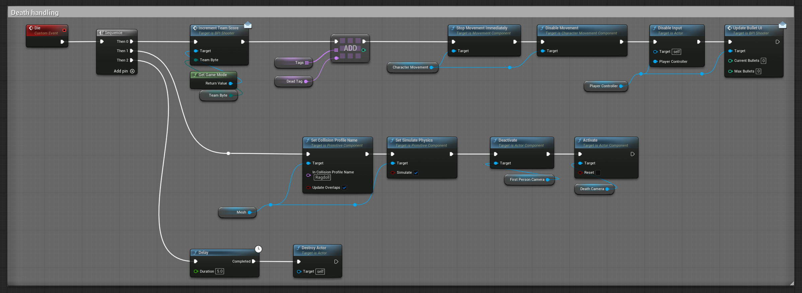
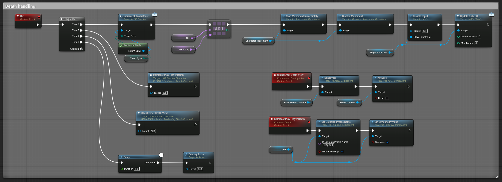
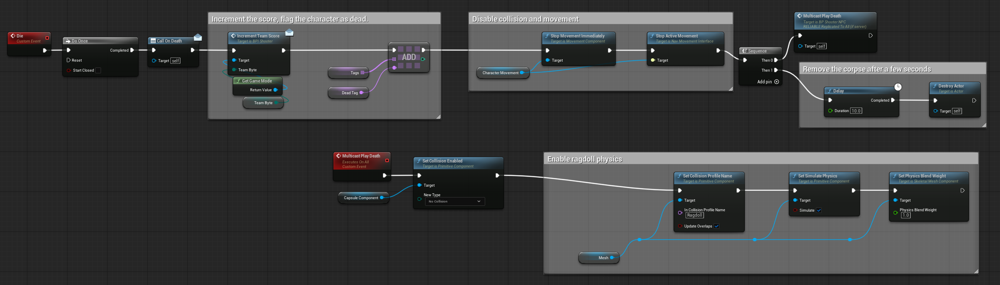
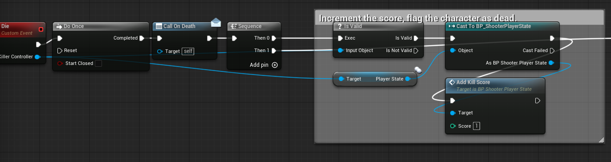
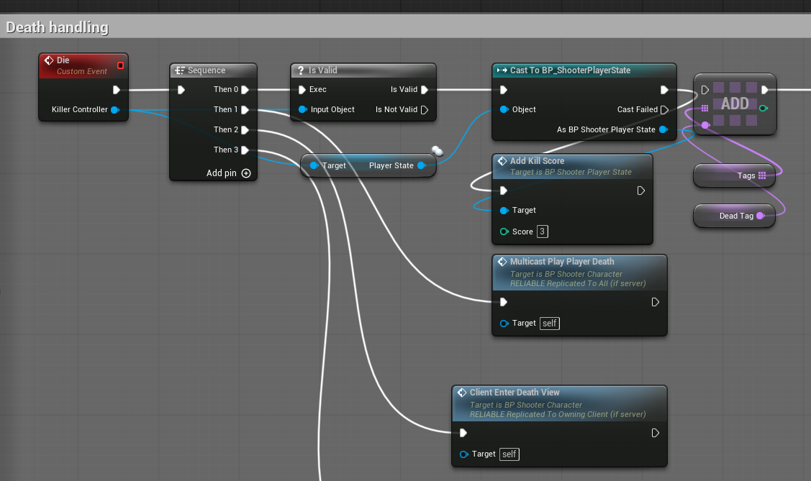

UE5 Multiplayer Game Demo
TencentCampDemo
多人竞技场 Demo 技术报告
基于 UE5 First Person Arena 模板的双人 Listen Server PvPvE 计分对战
开局一课客户端大作业 · Demo 视频与本报告共同构成功能验收材料
1. 项目概述与玩法
本项目在官方 First Person 模板的 Arena 变体基础上，完成了一个可供两名玩家在 Listen Server 中共同对抗 AI、也可互相战斗的 PvPvE Demo。
AI 战斗敌人能够移动、寻找并攻击任意存活玩家；Host 与 Client 均可击败敌人。
多人网络使用两人 Listen Server，Server 权威处理弹丸、伤害、死亡、计分和比赛结束。
胜负闭环个人分数同步到 PlayerState，率先达到目标分的玩家获得 VICTORY。
计分规则
从模板到 Demo 的主要开发
| 模板已有基础 | 本项目新增或修复 |
|---|
| Arena 地图、武器、玩家/NPC 生命与基础 AI | Client 开火到 Server 权威伤害链、Projectile 与关键状态复制 |
| 单机敌人生成与死亡表现 | Spawner 客户端重复生成修复、多人目标选择验证、有限持续补充生成 |
| 基础 HUD 与第一/第三人称素材 | 远端模型、动画空引用、Client 血量/受击反馈、多人布娃娃与死亡视角修复 |
| 模板队伍式计分雏形 | PlayerState 个人计分、GameState 比赛状态、目标分胜负与双端结果 UI |
2. 多人网络架构
实现遵循“Server 管规则、Client 管本地表现”的边界。Client 不能直接生成具备权威伤害的弹丸，而是通过自己拥有的 Character 发起 Server RPC。
Owning Client
输入、瞄准、本地动画
›
Server RPC
校验并生成 Projectile
›
Server Authority
命中、伤害、HP、死亡
共享世界表现NPC 与玩家死亡布娃娃使用 Reliable Multicast，使所有客户端看到一致的死亡结果。
拥有者专属表现血量 UI、受击特效、死亡摄像机与结果界面通过 Owning Client RPC 更新。
同步状态PlayerState 保存并同步个人分数；GameState 同步比赛结束、胜者及 Target Score。
AI 与生成Spawner 只在 Server 生效，避免 Client 再生成不会移动的本地 NPC 副本。
关键网络问题与处理
- Weapon Actor 本身不复制，因此将 Server RPC 放在 Client 拥有且复制的 Character 上。
- Projectile 的生成、Process Hit 与 Apply Damage 由 Server 权威执行，并复制移动/结果。
- 第一人称 Mesh 设为 Only Owner See，第三人称 Mesh 设为 Owner No See，修复远端双身体。
- 第一人称武器 Anim Blueprint 增加 Is Locally Controlled 保护，避免模拟代理读取空 Controller。
Server RPCReplicationRepNotifyMulticastOwning Client RPC
3. Client 受伤反馈与玩家死亡同步
模板原逻辑在 Server 的 AnyDamage 链上直接调用 UI，并将规则、物理表现和本地摄像机混在同一个 Die 事件中。普通 Client 的血量数值虽已改变，但本地 UI、受击特效及死亡视角无法自动更新。

修复前：Server 修改 HP 后直接调用 Update Health UI，不能驱动远端拥有者的本地界面。

修复后：Client Receive Damage Feedback 作为 Owning Client RPC，同时更新血量条与受击特效。

修复前：布娃娃、输入和 Camera 切换均在同一 Server Die 链执行。

修复后：Multicast Play Player Death 同步布娃娃；Client Enter Death View 只处理拥有者摄像机。
验证结果：Host/Client 生命、受击特效、死亡、布娃娃、死亡摄像机与销毁组合回归均通过，未发现新的 Runtime Error。
4. NPC 死亡、AI 与持续生成
NPC Die 原本是 Not Replicated 事件，Server 可以完成规则与销毁，但 Client 看不到布娃娃。修改后保留 Server 的死亡判定、OnDeath、停止移动和销毁流程，把胶囊碰撞关闭与 Mesh 物理表现拆到 Reliable Multicast。

BP_ShooterNPC：Server 死亡规则调用 Multicast Play Death，所有端统一启用 Ragdoll 碰撞和物理混合。
多玩家索敌
- 敌人可攻击 Host 与普通 Client。
- 目标死亡或失效后能够继续选择有效玩家。
- 双人 PIE 的目标切换测试已通过。
Spawner 修复
- 关闭 Spawner 的 Net Load on Client，消除 Client 本地静止 NPC 副本。
- Arena 放置两个 Spawner，每个同时维持一个活动 NPC。
- Spawn Count 设为 10，整场最多生成 20 个 NPC。
验证结果：双方看到的 NPC 数量、移动、受伤、死亡与销毁结果一致；敌人死亡后可由对应出生点继续补充。
5. 个人计分与比赛胜负
模板原计分按死亡对象阵营增加固定队伍分数，无法标识实际击杀者。现有实现从 Apply Damage 的 Instigator Controller 传递 Killer Controller，在死亡事件中取得击杀者 PlayerState，并统一调用 Add Kill Score。

NPC Die：Do Once 防止重复死亡，根据 Killer Controller 获取 BP_ShooterPlayerState，增加 1 分。

Character Die：有效玩家击杀者获得 3 分，同时触发多人死亡表现和拥有者死亡视角。
比赛状态闭环
PlayerState
Authority-only 加分
›
GameMode
Finish Match 防重复
›
GameState
同步 Winner / Finished
- 加分前检查 Match Finished；使用加分后的分数与 Target Score 比较。
- GameMode 先设置 Winner Player State，再设置 Match Finished，比赛结束后冻结双方分数。
- GameMode 遍历 PlayerController，并通过 Reliable Owning Client RPC 显示 VICTORY 或 DEFEAT。
- 玩家死亡后自动重生，PlayerState 使个人分数跨 Pawn 保留。
验证结果：Host 与 Client 双向获胜均正确显示相反结果，Widget 不重复创建，正式目标分已恢复为 10。
6. 测试结果、运行方式与结论
多人 PIE 验收
| 场景 | 结果 |
|---|
| 两名玩家生成、控制、互见及远端动画 | 通过 |
| Host / Client 分别击杀 NPC，双方死亡结果一致 | 通过 |
| AI 攻击双方玩家并切换有效目标 | 通过 |
| NPC +1、PvP +3、AI 击杀不误加分 | 通过 |
| 玩家重生后分数保留 | 通过 |
| Host / Client 双方向达到目标分并显示胜负 | 通过 |
运行方式
- 使用 Unreal Engine 5.7 打开
TencentCampDemo.uproject。
- 默认地图为
/Game/Variant_Shooter/Lvl_ArenaShooter，默认 GameMode 为 BP_ShooterGameMode。
- 在 PIE 设置中选择 2 Players、Listen Server、独立窗口运行。
结论
项目完成了作业要求的三项核心能力：可移动并攻击玩家的敌人、玩家可击败敌人；基础计分和目标分胜利机制；双人 Listen Server 网络对战。开发重点不是扩充素材，而是将模板的单机逻辑拆分为 Server 权威规则、全端共享表现和拥有者本地反馈三个层次。
已知限制：比赛结束后分数会冻结并显示结果，但尚未完整停止玩家输入、AI 伤害和 Spawner 补充。演示在结果界面出现后结束。当前报告不将未执行的打包构建写成已验证事项。
项目仓库
https://github.com/DIO-KONG/TencentCampDemo
仓库包含 Unreal 项目文件、开发阶段记录、蓝图修改截图、演示视频、HTML 报告及本 PDF。Unreal 二进制资产与视频使用 Git LFS 管理。